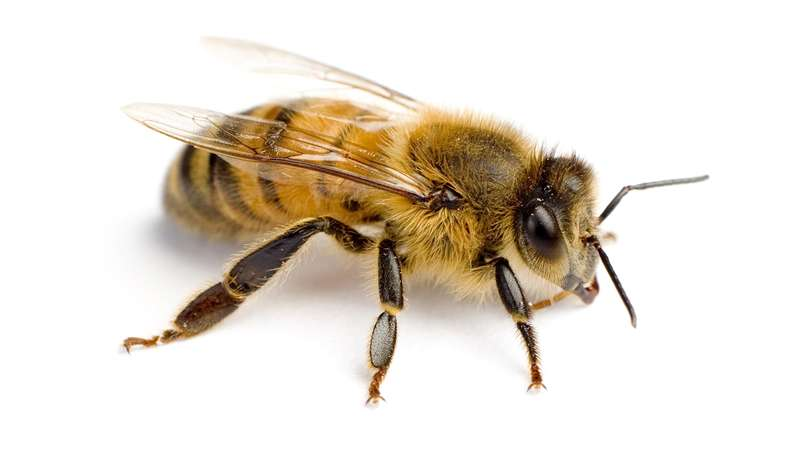

Lab 15 - Fancy CSS
I have worked on this lab with Thibault.
Challenges
The challenges here was to use different style of fancy CSS. To highlight them I've chosen to let the background in a white color.
Problems
I have used shadows on the different titles of the document. Also on the different pictures. After that I've made a border with round corners that contains 3 pictures with 3 differents modifications.
Results
Well you are looking at the index.html file I created.
Here is a box with modified corners. It also contains photos that has fancy css. Maybe it's not that beautiful but see that as a demonstration of what you can do.


